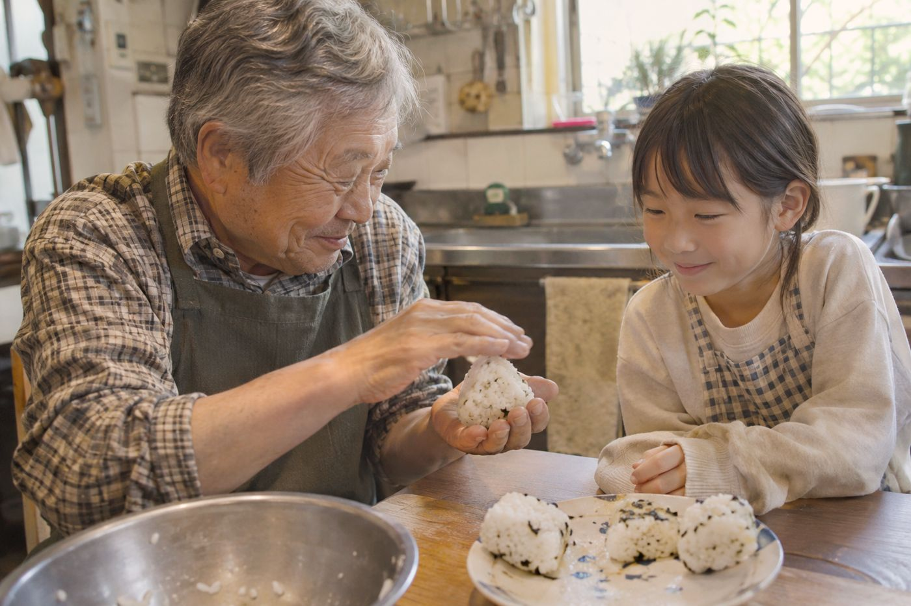
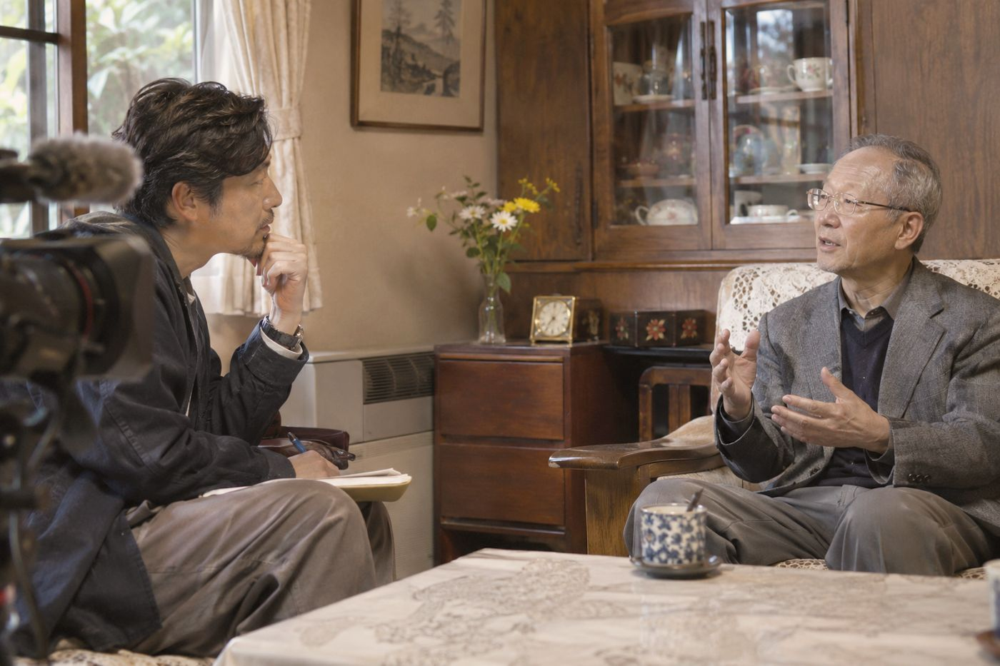

私たちの理念
あなたの思いを、
映像にする。
考えているのは、
それだけです。
会社を興し、人を雇い、何十年と事業を背負ってきた方の人生には、決算書にも社史にも載らない思いがあります。なぜあの決断をしたのか。誰のために踏ん張ってきたのか。本当は、何を成し遂げたかったのか。
私たちは、その思いを伺い、映像に残します。台本はありません。用意した言葉を読んでいただくのではなく、あなたが語る言葉そのものを、表情や声の震えとともに記録します。
情報も映像も一瞬でつくれる時代になりました。それでも、人の心を動かすのは、人が人に向き合って語った言葉です。だから私たちは、お会いして、時間をかけてお話を伺うことから始めます。



人の思いを、時代を越えて手渡す。
ひとりの経営者が抱いてきた思いを、家族、社員、そして次の世代へ。言葉と表情のまま、確かに受け継がれるかたちにします。
お会いし、お話を伺い、その人生を一本の映像に編む。
成し遂げたことも、成し遂げられなかったことも。人生の一場面ずつに光を当て、その方の生き様が伝わるヒストリーに仕上げます。
人生の思いを映像で残すことが、当たり前の社会へ。
功績を讃える記念品ではなく、思いを受け継ぐための記録として。生き様を映像で残す文化を、日本の経営者から広げていきます。
成し遂げたことだけが、
人生ではない。
経営者の方とお話しすると、必ずと言っていいほど「本当はもっとやりたかったことがある」という言葉が出てきます。立ち上げたかった事業、果たせなかった約束、志半ばで手放した挑戦。
多くの記録は、成功と功績だけを残します。けれど、その方の生き様がもっとも表れるのは、叶わなかった夢を語るときの表情です。私たちは、成し遂げられなかったことも含めて、あなたの人生のヒストリーとして残します。その思いは、映像を通して、次にそれを叶える誰かへ託されていきます。

時代や資金、体力の事情で実現できなかった構想。その着想と、いまも消えない熱を語っていただきます。
恩人に、家族に、社員に。言えずにきた感謝や、果たせなかった約束を、ご自身の言葉で残します。
後継者、お子さま、お孫さま、会社の若い社員へ。叶えてほしい夢と、大切にしてほしい考えを手渡します。
ヒストリー映像の章立て
お一人おひとりの人生に合わせて構成しますが、多くの作品は次の流れで、生まれた日から未来へ託す思いまでをたどります。
- Chapter 1原点生まれた町、ご両親、少年少女時代。人生の土台となった出来事。
- Chapter 2決断創業や転機。なぜその道を選び、何を懸けたのか。
- Chapter 3成し遂げたこと築いてきた事業と、ともに歩んだ人々の証言。
- Chapter 4成し遂げられなかったこと描いていた夢、果たせなかった約束、いまも残る思い。
- Chapter 5託す言葉家族へ、社員へ、次の世代へ。未来に向けたメッセージ。
制作の考え方

台本はつくりません
あらかじめ書いた言葉を読んでいただくことはありません。私たちが用意するのは問いだけです。語られる言葉はすべて、あなた自身のものです。
必ずお会いして伺います
一度の撮影で終わらせず、数回にわたってお会いし、信頼関係を築きながらお話を伺います。本音は、向き合う時間の中でしか生まれません。
テレビの現場で培った取材力
事業責任者でチーフディレクターの滝田は、テレビ番組の制作現場で、数多くの方に取材してきました。話を引き出す力と、人生を一本の流れとして伝える構成力を、あなたのために使います。
サービス
内容と撮影の規模に応じて、個別にお見積りいたします。
ライフヒストリー映像
ご本人への複数回のインタビューを軸に、ゆかりの地での撮影、ご家族や旧知の方の証言を重ね、人生の歩みと思いを一本の映像に残します。
- 尺
- 30〜60分
- 制作期間
- 3〜6か月
創業者ヒストリー映像
創業者の志と会社の歩みを、社員や取引先の言葉とともに記録します。周年行事、事業承継、社員への理念継承の場でお使いいただけます。
- 尺
- 20〜40分
- 制作期間
- 3〜6か月
追悼ヒストリー映像
故人を知る方々への取材と、写真や映像資料から、その方の人生と思いをたどります。社葬、お別れの会、法要で上映いただけます。
- 尺
- 10〜20分
- 制作期間
- 最短2週間
ご相談からお届けまで
- Step 1ご相談まずはお会いして、映像に残したい思いを伺います。
- Step 2事前取材人生の年表をともにたどり、語っていただきたい場面を整理します。
- Step 3構成のご提案章立てと取材先、撮影場所をご提案します。
- Step 4インタビュー・撮影数回に分けてお話を伺い、ゆかりの地や関係者も取材します。
- Step 5編集・試写試写でご確認いただき、ご納得いただけるまで仕上げます。
- Step 6お届け上映用データと保存用メディアで納品。上映の場にも立ち会います。
思いをお預かりする者として
守秘の徹底
伺ったお話、経営上の情報、ご家族に関することは、ご本人の許可なく外部に出すことはありません。必要に応じて秘密保持契約を結びます。
公開範囲はご本人が決める
ご家族だけで見る、社内で共有する、式で上映する。誰に見せるかは、すべてご本人とご家族のご判断に従います。
語りたくないことは、語らなくていい
お話しいただく内容はご本人が選べます。撮影後でも、使ってほしくない場面は必ず外します。
長く残る形で
何十年先にもご覧いただけるよう、複数の形式で納品し、ご希望に応じて原本データをお預かりします。
事業責任者メッセージ
きっかけは、祖母の葬儀でした。祖母の人生をたどる映像をつくり、式で流したところ、会場にいた家族や祖母の友人たちから、後になって何度も感謝の言葉をいただきました。写真を並べるだけでは伝わらなかった祖母の思いが、映像と言葉を通じて、確かにみんなに届いたのだと思います。
同時に、悔いも残りました。祖母が本当は何を考え、何をやり残したと感じていたのか。それを本人の口から聞いておけばよかった、と。
私はテレビ番組の制作の仕事を通じて、多くの方に話を伺ってきました。とりわけ事業を築いてこられた方々は、成し遂げたことの何倍もの「やりたかったこと」を胸に抱えています。その思いは、語られなければ、誰にも知られないまま消えてしまいます。
私たちは、あなたの思いを映像にすることだけを考えています。成し遂げたことも、成し遂げられなかったことも、すべてがあなたの人生です。その思いを、受け継ぐべき人たちへ確かに手渡すお手伝いをさせてください。
ひとこま 事業責任者 / チーフディレクター 滝田 務
よくあるご質問
人前で話すのが得意ではありません。
台本はありませんので、うまく話す必要はありません。私たちが問いかけ、あなたが思い出すままにお話しいただく形です。数回お会いするうちに、自然に言葉が出てくる方がほとんどです。
経営上の話や、家族にも話していないことがあります。
お話しいただいた内容は、ご本人の了承なく外部に出すことはありません。映像に入れるかどうかも、試写の段階でご本人に決めていただきます。
体調面が心配です。撮影にはどのくらい時間がかかりますか。
一回のインタビューは1〜2時間ほどです。ご自宅や入院先など、ご負担の少ない場所に伺います。日程もご体調に合わせて調整します。
写真や映像資料があまり残っていません。
インタビューと、ゆかりの場所での撮影を中心に構成できます。ご家族や旧知の方への取材で、新たに資料が見つかることも少なくありません。
家族から本人に贈ることはできますか。
はい。ご家族やご子息、会社の皆さまからのご依頼も承ります。ご本人へのお声がけの仕方から、一緒にご相談させてください。
運営会社
| 事業名 | ひとこま（仮称） |
|---|---|
| 運営会社 | 福祉ITパートナー |
| 代表者 | 上原 健太 |
| 事業責任者 | 滝田 務（チーフディレクター） |
| 事業内容 | ライフヒストリー映像、創業者ヒストリー映像、追悼ヒストリー映像の企画・取材・撮影・編集 |
| 所在地 | 準備中 |